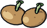
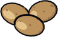
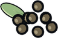
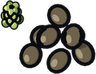
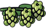
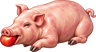
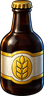
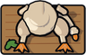
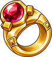

Eisenwald
Eisenwald, the iron forest, is inspired by the German lands of central Europe. It has dark fir woods and beech forest, a winding river valley, vineyards on sunny slopes and mining hills full of silver. Its towns are timber-framed, with cream and ochre plaster, dark oak beams, red sandstone and scalloped red roofs.
The capital, Hohenburg, spreads over nine maps under its castle on the crag, with a market square, the town hall, the Church of the First Star and three gates. Tannheim is the woodcarvers' village in the deep forest, Brauheim the brewers' town at the river's mouth with its quay, and Kesselbach the silver-mining town above its mine. Out in the wild are the Forest Chapel, the Wolf Tower, the Charcoal Burners' Camp and the Wild Hunt's Clearing.
Walk east through the gap in the Stonecrest Hills to get there, or take the boat from Port Saltreach to Brauheim.
Places
208 maps and 25 rooms. Named places:
- Grenzstein
- The Wild Hunt's Clearing
- Tannheim
- Tannheim Carvers' Lane
- The Forest Chapel
- Hohenburg Castle Lane
- Hohenburg Castle
- Hohenburg Church Square
- Hohenburg West Gate
- Hohenburg Market
- Hohenburg East Gate
- Hohenburg Gardens
- Hohenburg South Gate
- Hohenburg Smiths' Row
- The Wolf Tower
- The Charcoal Burners' Camp
- Brauheim
- Kesselbach
- Kesselbach Smelter
- Brauheim Quay
Creatures
| Creature | Placed | Tameable |
|---|---|---|
| Wildcat | 82 | yes |
| Wolf | 68 | yes |
| Wild Boar | 52 | yes |
| Forest Kobold | 26 | |
| Pig | 20 | yes |
| Werewolf | 18 | |
| Ogre | 17 | yes |
| Goose | 12 | yes |
| Hunt Hound | 10 | |
| Cow | 9 | yes |
Boss: Wild Huntsman, Lord of the Wild Hunt
- Lair: The Wild Hunt's Clearing
- Health 1800, attack 34, defence 14
- Slams a ring of ground for 50 damage every 4 seconds, after a red warning
- Calls Hunt Hound when hurt
- Drops
 Knight's Sword and 700 gold
Knight's Sword and 700 gold
People
- Assayer Klara
- Baker Liesel
- Border Warden Konrad
- Brewer Konstantin
- Brewmaster Ottilie
- Burgomaster Friedrich
- Butcher Gustav
- Captain Henrike
- Castle Guard Greta
- Castle Guard Ulrich
- Charcoal Burner Ruprecht
- Coachman Kaspar
- Coachman Otto
- Coachman Wendel
- Coachwoman Frieda
- Countess Adelheid
- Deacon Martin
- Farmer Gertrud
- Father Benedikt
- Fisher Matthias
- Forester Agnes
- Guard Bertram
- Guard Hannes
- Guard Ilse
- Herbwife Margit
- Hunter Florian
- Innkeeper Jakob
- Merchant Wilhelm
- Mine Foreman Anton
- Sister Hildegard
- Sister Walburga
- Smelter Bruno
- Smith Volker
- Town Crier Emil
- Woodcarver Lukas
Quests
| Quest | From | Summary |
|---|---|---|
| Tusks in the Turnips | Farmer Gertrud | Drive off 5 Wild Boar from the Wolfbach Valley. |
| The Brewers' Contest | Brewmaster Ottilie | Bring Brewmaster Ottilie 5 Hops for the Brewers' Fair. |
| The Carver's Commission | Woodcarver Lukas | Bring Woodcarver Lukas 6 Oak Logs. |
| The Wild Hunt | Countess Adelheid | Face the Wild Huntsman in his clearing and end the Hunt. |
| Trouble Below | Mine Foreman Anton | Clear 6 Forest Kobolds out of the Kesselbach mine. |
| The Iron Wood | Border Warden Konrad | Find Burgomaster Friedrich in Hohenburg's town hall. |
| Silver for the Countess | Assayer Klara | Bring Assayer Klara 5 Chunks of Silver from the Kesselbach veins. |
| The Wolf of Tannheim | Forester Agnes | Hunt down 2 Werewolves in the deep forest. |
Farming
| Seed | Farming level | Harvest |
|---|---|---|
 Seed Potatoes | 8 |  Potatoes |
 Cabbage Seeds | 14 | |
 Hops Seeds | 26 |  Hops |
Regional recipes
| Makes | Skill | Station | From |
|---|---|---|---|
| Cooking 16 | Stove or Campfire | 2 × | |
| Cooking 18 | Stove or Campfire | 1 ×  Pig, 1 × | |
 Ale ×2 | Cooking 20 | Stove or Campfire | 2 × |
| Cooking 22 | Stove or Campfire | 2 × | |
| Cooking 40 | Stove or Campfire | 1 ×  Raw Goose, 2 × Potatoes, 1 × |
Festivals
- Brauheim Brewers' Fair, 22 September to 6 October: Farming improves twice as often.
Deeds and feats
Deeds of Eisenwald
- Novice: Finish The Iron Wood, Reach Hohenburg, Reach Tannheim, Defeat 3 Wild Boar. Reward: 5 ×
 Pretzel, 3 ×
Pretzel, 3 ×  Sausages.
Sausages. - Adept: Finish Trouble Below, Reach Brauheim, Mine a Chunk of Silver, Gather Hops. Reward: 3 ×
 Silver Bar,
Silver Bar,  Steel Shield.
Steel Shield. - Master: Defeat the Wild Huntsman, Finish The Wild Hunt, Defeat 5 Werewolves, Get a Roast Goose. Reward: Knight's Sword,

Ruby Ring; title "of the Iron Wood".
- Huntbreaker: Defeat the Wild Huntsman 3 times; title "the Huntbreaker".
- Kobold-bane: Defeat 100 Forest Kobolds; title "Kobold-bane".
Travel
| From | Ask | To | By | Fare |
|---|---|---|---|---|
| Hohenburg Market | Coachman Otto | Tannheim | coach | 20 gold |
| Hohenburg Market | Coachman Otto | Brauheim | coach | 20 gold |
| Hohenburg Market | Coachman Otto | Kesselbach | coach | 25 gold |
| Tannheim | Coachman Kaspar | Hohenburg | coach | 20 gold |
| Brauheim | Coachwoman Frieda | Hohenburg | coach | 20 gold |
| Kesselbach | Coachman Wendel | Hohenburg | coach | 25 gold |
| Brauheim Quay | Captain Henrike | Port Saltreach | ship | 40 gold |
| Port Saltreach | Captain Morwen | Brauheim | ship | 40 gold |